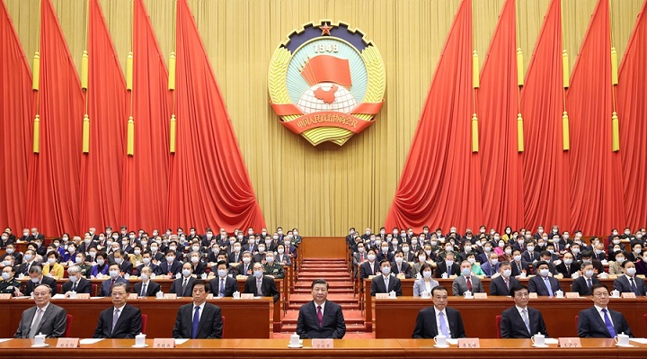
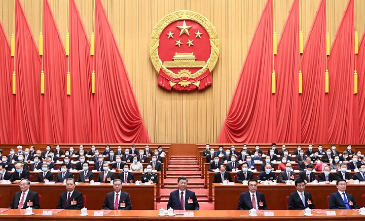

- 
- 
<
>
-
白云校区召开2020-2021学年第一学期教学工作会议
2021-01-13 -
不忘初心，砥砺前行--我校学子再次荣获广东省电子商务技能赛项一等奖
2021-04-15 -
学校党委书记潘剑勇同志到艺术设计系调研工作
2021-03-22 -
工商管理系党总支召开党员大会
2021-03-17
奋斗的青春
最美丽我为群众办实事
部署开展“我为群众办实事”实践活动
为深入贯彻落实习近平总书记在党史学习教育动员大会上的重要讲话精神，认真贯彻省委关于开展党史学习教育的部署要求，进一步转变工作作风，发扬中国共产党求真务实的光荣传统，真正把精力投入到办实事、求实效上来，把学习党史同总结经验、推动工作结合起来，同解决实际问题结合起来，把“以师生员工为中心”的发展思想落到实处，围绕师生关切问题，切实为师生员工办实事解难题，不断提升师生员工获得感、幸福感，结合学校...
- 2021-04-14 广青学院党史学习教育工作简报-2021年第7期
- 2021-04-14 广青学院党史学习教育工作简报-2021年第6期
- 2021-04-12 广青学院党史学习教育工作简报-2021年第5期
- 2021-04-10 广青学院党史学习教育工作简报-2021年第4期
- 2021-04-05 广青学院党史学习教育工作简报-2021年第3期
- 2021-04-03 广青学院党史学习教育工作简报-2021年第2期
- 2021-04-01 广青学院党史学习教育工作简报-2021年第1期
Copyright ©2020 - 2021 All Rights Reserved.
版权与免责声明| 制作：黄定邦、方建东、黄文杰